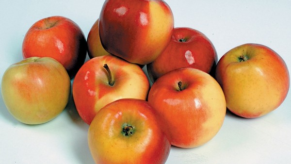

Jako ovoce oznaèujeme zpravidla sladké jedlé plody, plodenství nebo semena víceletıch semennıch rostlin, nejèastìji døevin. Vìda, která se zabıvá posuzováním jednotlivıch odrùd ovoce, se nazıvá pomologie. Staroøímskou bohyní ovoce èi ovocnáøství byla Pomona, jinak chápaná jako personifikace ovoce. Ovoce je velmi vıznamnım zdrojem vitamínù.

Konzumace jablek má pro lidské zdraví ještì vìtší vıznam, ne� se dosud soudilo. Rèení, �e jedno jablko zkonzumované ka�dı den dr�í choroby i doktora dál od tìla, bylo ovìøeno v praxi. Ovšem odborníci dosud trochu podceòovali jablka, meruòky a broskve s ohledem na obsah látek blahodárnì pùsobících na zdraví – antioxidantù. Tìch je v nich podle nejnovìjších mìøení a� pìtkrát více, ne� se dosud uvádìlo.
Hruška je ovoce, plod hrušnì, kterı je malvice. Plody vyšlechtìnıch odrùd jsou jedlé a chutné. Tyto š�avnaté plody vyšlechtìnıch odrùd se podle doby dozrávání respektive skliznì dìlí na letní, podzimní a zimní. Pøièem� letní jsou nejménì trvanlivé a zimní naopak vydr�í nejdéle. Hrušky je mo�no skladovat, nevydr�í ale tak dlouho jako jablka. Hrušky jsou ovoce s velmi nízkım vıskytem vitamínu C. Nezanedbatelnı je ovšem vıskyt vitamínu B, a to hlavnì pod slupkou.
Tøešnì je druh ovoce, které se øadí mezi peckovice. Roste na stromu slivoò. Jedná se o mìkkı plod tvoøenı peckou, která je uprostøed plodu. Okolo ní se nachází sladká du�nina pøibli�nì bílé a� narù�ovìlé barvy obsahující vysokı podíl vody. Ohranièena je jedlou

slupkou, která má èervenou a� tmavì rudou barvu, pokud je plod zralı. V pøípadì, �e je plod ještì nezralı, je plod zelenı. Velikost plodu dosahuje 1 a� 2 cm. Tøešnì je vìtšinou kulového tvaru, kterı je tvoøen dvìma nesourodımi èástmi. Na jedné stranì jsou spojeny, èím� vzniká slabá rıha a ve spodní èásti ostrı vıbì�ek. Du�nina je tvoøena více ne� 80 % vody, dále ovocnımi cukry a je bohatım zdrojem jak minerálù tak i vitamínù. Tmavší druhy tøešní obsahují bohaté zdroje hoøèíku, �eleza, jódu, fosforu, zinku, vápníku, draslíku a køemíku. Z vitamínu obsahují ve vıznamné míøe vitamín A èi betakaroten, vitamín P, vitamín C, vitamín E, vitamín B.